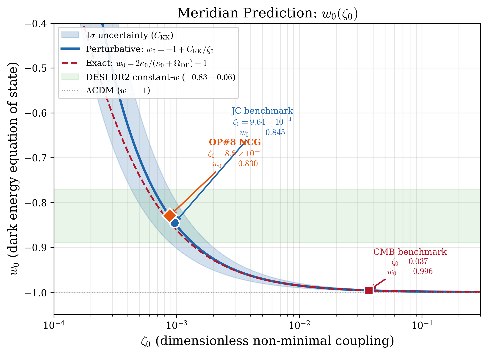
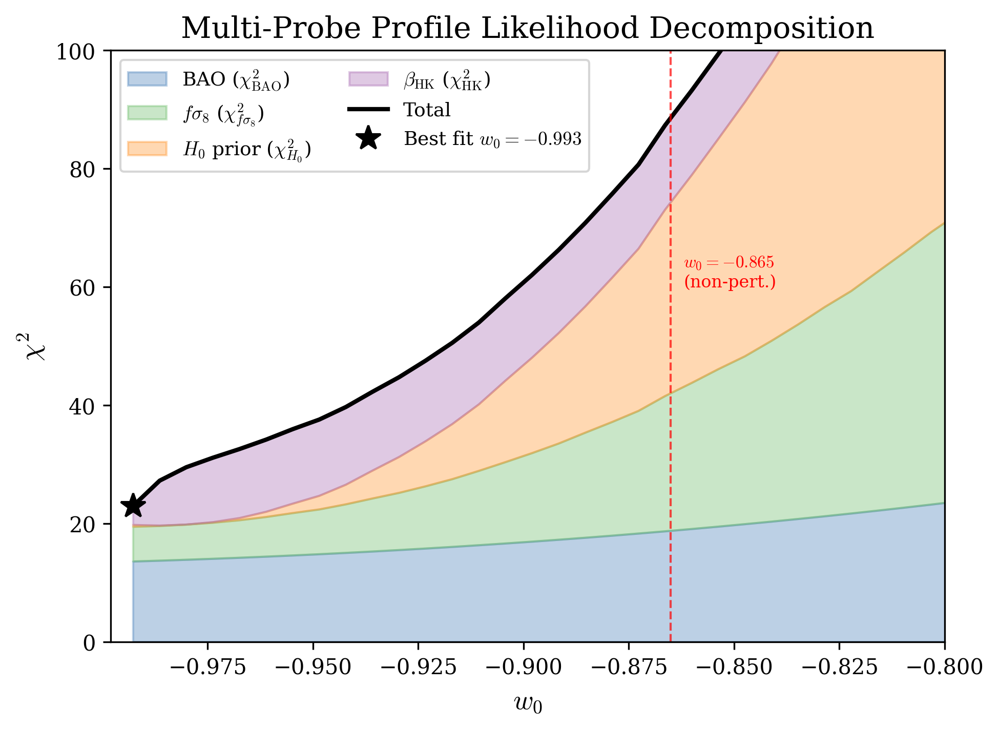
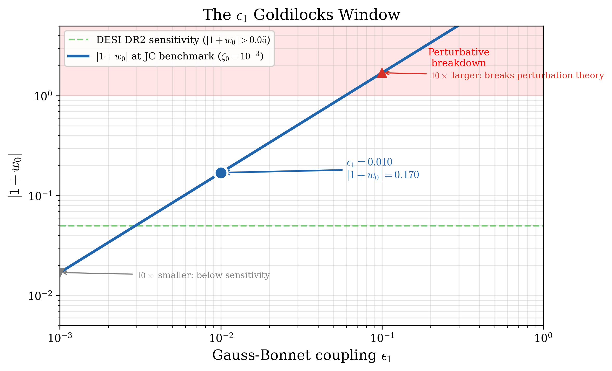

1 · What is it?
One principle, one anchor volume, a library of domain applications, and a technical substrate of experiments and proofs.
Coherent multi-scale systems maintain
structural superposition until informed
measurement collapses them."] Anchor["Anchor — The Coherence Principle (267pp)
Paired prose + category-theoretic formalization
3 axioms · 6 theorems · 4 conditions"] Domain["Domain Volumes"] Meridian["Meridian
(physics, 181pp)"] KF["The Killing Form
(computation, 85+ findings)"] Living["The Living Architecture
(ecology)"] Body["The Coherent Body
(human body)"] Mind["The Coherent Mind
(mental health)"] Org["Dynamic Organization
(institutions)"] Cont["The Continuity
(persistence of self)"] Drift["Drift
(lived practice)"] Tech["Technical substrate
Wells · Killing-Form scripts · Meridian cosmology code
Cross-substrate navigation experiments"] CP --> Anchor Anchor --> Domain Domain --> Meridian Domain --> KF Domain --> Living Domain --> Body Domain --> Mind Domain --> Org Domain --> Cont Domain --> Drift Meridian --> Tech KF --> Tech style CP fill:#f4ece0,stroke:#6b5b3a,stroke-width:2px style Anchor fill:#e8e3d5,stroke:#6b5b3a style Domain fill:#ffffff,stroke:#999,stroke-dasharray: 3 3 style Tech fill:#e0e8f0,stroke:#3a5b6b
2 · What does it say?
2.1 · Streams and the Identity-Trajectory Triple
The Principle's primary object is a stream — a tuple (σ, K, Ω, γ) of a source-structure, a kind (reactive / self-maintaining / self-referential / abstractive), a degree-of-freedom space, and a trajectory. Every stream decomposes into three orthogonal-but-constrained projections: its form, its content/carrier, and its degrees of freedom. This is the Identity-Trajectory Triple.
(σ, K, Ω, γ)
in 𝒞_Str"] Form["Form(S)
in 𝒞_Form
= kind + constraints"] LDS["Content/Carrier(S)
in 𝒞_LDS
= localization + dynamics"] DOF["DOF(S)
in 𝒞_DOF
= Ω_S with trajectory"] S -->|F_1| Form S -->|F_2| LDS S -->|F_3| DOF Consistency{{"consistency conditions
(orthogonal-but-constrained)"}} Form -.-> Consistency LDS -.-> Consistency DOF -.-> Consistency style S fill:#d8e4f9 style Form fill:#f9d8d8 style LDS fill:#f9f0d8 style DOF fill:#e4f9d8 style Consistency fill:#ffffff,stroke:#888,stroke-dasharray: 5 5
2.2 · The four conditions for coherence
A stream is in coherence-regime over an interval when four conditions jointly hold. If they do, the stream outperforms a comparable non-coherent reference on its trajectory-divergence measure. None of the conditions is posited independently — each is derived from the axiomatic substrate.
Complementary objectives on
separate degrees of freedom"] C2["C2 · Measurement
Alignment assessed at each
refresh-event"] C3["C3 · Multi-scale
Coherence bidirectional across
DAG levels"] C4["C4 · Dynamic
Build-dissolve-build
oscillation maintained"] Outperform["Outperformance:
E[D(S)] < E[D(S')] for
comparable non-coherent S'"] Stream --> C1 Stream --> C2 Stream --> C3 Stream --> C4 C1 --> Outperform C2 --> Outperform C3 --> Outperform C4 --> Outperform style Stream fill:#d8e4f9 style C1 fill:#f9d8d8 style C2 fill:#f9e4d8 style C3 fill:#f9f0d8 style C4 fill:#e4f9d8 style Outperform fill:#d8f9e4
3 · What does it predict?
3.1 · Physics — Meridian
A 5D warped geometry with non-commutative-geometric spectral action and a self-tuning scalar sector yields a sharp prediction on dark-energy equation-of-state: w₀ = −0.990. This sits cleanly inside DESI DR2 confidence contours and is distinguishable from ΛCDM at forecast-level precision.



3.2 · Computation — The Killing Form
A dual-coherence analysis of transformer-model internals. 85+ empirical findings across attention algebra, training dynamics, and inference behavior. Key results:
- Bridge #71 empirical breakthrough — GPU-confirmed P24/P28, 29 predictions validated, Unified Abelian Exception observed.
- Baseline CV predicts gating — baseline per-layer coefficient of variation predicts the model's gating map at ρ = −0.895, p = 0.0001.
- Static-mask viability — the predicted gating enables static masking with negligible quality loss; compute savings follow.
- Dynamic-coherence confirmed — build-dissolve-build oscillation observed at gradient-dialogue level, validating C4 empirically in silicon.
3.3 · Consciousness — Wells
A research instrument for probing structure/observation correspondence in language-model streams. The central quantity is correspondence width W_I := H(S | O) — the residual entropy of structure given the observation. Two independent experiments (Exp 11 and the Qwen 3-condition probe) yield W_I ≈ 0.66 bits, suggesting a rough calibration of the instrument at current resolution. The limit question W_∞ has three formally coherent outcomes: eliminativism, bounded property-dualism, and strict irreducibility. The program is the sequence of instruments that close the gap.
4 · Architecture
The repository is organized by kind — applying the separation-of-coherences principle to its own structure. Five top-level directories, each with a distinct role.
Corpus-Perspectival"] Library["Library/
compiled volumes"] Technical["Technical-Work/
code + results"] Foundations["Foundations-of-Identity/
identity + Drift substrate"] Research["Research/
working notes + sources"] Unreleased["Unreleased-Work/
drafts in progress"] Repo --> Library Repo --> Technical Repo --> Foundations Repo --> Research Repo --> Unreleased Library --> L1["The Coherence Principle
(Anchor)"] Library --> L2["Meridian
(Vol 1, physics)"] Library --> L3["The Killing Form
(Vol 2, planned)"] Library --> L4["Drift
(Vol 8, essays)"] Library --> L5["...six more domain volumes"] Technical --> T1["Killing-Form/
(scripts + findings)"] Technical --> T2["Meridian/scripts/
(244 computation scripts)"] Technical --> T3["Wells/
(bridge + cross-substrate + entropy)"] style Repo fill:#f4ece0,stroke:#6b5b3a,stroke-width:2px style Library fill:#e8e3d5 style Technical fill:#e0e8f0 style Foundations fill:#f0e0e8 style Research fill:#e8f0e0 style Unreleased fill:#f0ede0
Read further
- The Coherence Principle (Anchor, 267pp) — PDF on GitHub · Zenodo DOI
- Project Meridian (Vol 1, 181pp) — PDF on GitHub · Zenodo DOI
- Drift (Vol 8, essays & media) — Reader site
- Full repository — Multi-DAC / Corpus-Perspectival